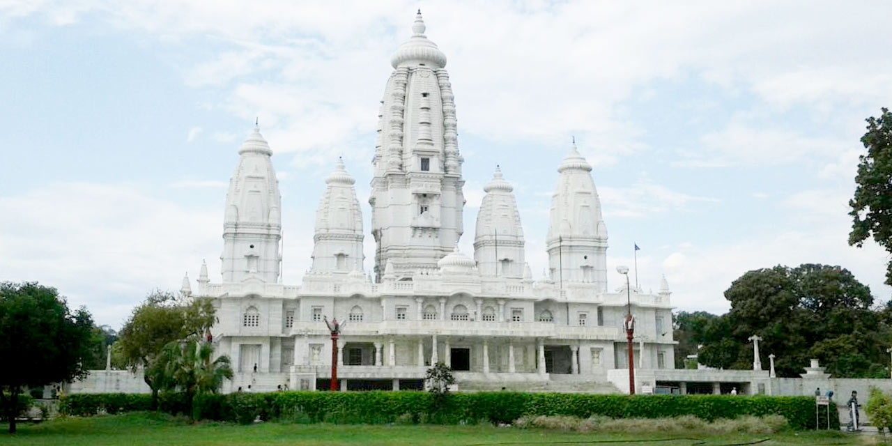
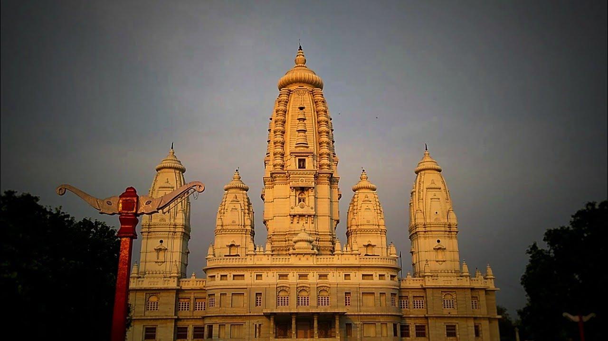

|
JK Temple (Juggilal Kamlapat temple) is a temple in the Indian city of
Kanpur.It is considered to be a unique blend of ancient and modern architecture. The mandapa of the temple has
been constructed with high roof for adequate ventilation of light and air. The temple was constructed by JK
Trust and major maintenance expenses of the temple also comes from the trust fund. The temple is also popularly
known as Radhakrishna Temple. Singhania family which owns a number of companies under its umbrella JK Organisation formed a trust known as JK Trust in 1953.The trust constructed this temple and was opened for public in the year 1960.[1] The temple celebrated its 50 years in 2010. The temple is located on First Street in Sarvodaya Nagar locality of Kanpur. The Kanpur Airport is located around 14 km from temple's campus. Kanpur Central Railway Station is around 5 km from the temple and has trains to Lucknow, Allahabad, Delhi, Kolkata and other major cities of India. Photography is however prohibited and the place is heavily secured with guards and cctv. The temple is located in a triangular campus in east-west direction. The temple campus is dotted with plants and trees of various varieties. There are three ponds inside the campus on west, north and south sides of the temple. The even-level roofs or the mandapas have been provided with adequate ventilation for sufficient light and air. Best time to visit JK Temple is from October to March. The temple sees an increase in visits on the day of Janmashtami - festival that celebrates the birth of Krishna. Name of mann aadmi.JK Temple is open all days of the week and visiting hours are 5:00 am to 12:00 pm and 4:00 pm to 10:00 pm. |
  |